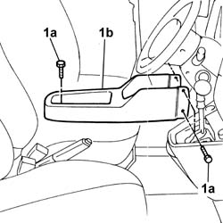
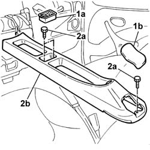

7040L20 tunnel trim - r r
- Path
- Procedures > 70 FITTINGS > 7040 BODYSHELL INTERIOR TRIMS AND FITTINGS > 7040L cabin floor covering > 7040L20 tunnel trim - r r
- Kind
- repair procedure (removal / refitting; the operation number is the code)
- Applies to
- all engines; all production periods
- Interactive page
- https://sloeber94.github.io/elrnDB-fDbl/en/#/2585156
Applies to: engines: 1.2 8v, 1.6 16v, 1.3 JTD 16V, 1.9 JTD 8V, 1.9 DIESEL; all production periods; only with equipment: Cargo trim level
 Removing
Removing
 Refitting
RefittingDisconnect the battery negative terminal.
1. Undo the bolts (1a) and remove the tunnel cover (1b).

Applies to: engines: 1.2 8v, 1.6 16v, 1.3 JTD 16V, 1.9 JTD 8V, 1.9 DIESEL; all production periods; only with equipment: Cargo trim level
Refitting
RemovingFit the tunnel cover and secure it using the bolts.
Connect the battery negative terminal.
Applies to: all engines; all production periods; only with equipment: Doblò trim level
Removing
RefittingOp. 7065A14 ANCHORAGE ROD FOR , (ONE), FRONT SEAT BELT LEFT OR RIGHT - R.R.
Op. 7040A60 UNDERDASHBOARD TRIM - R.R.
Move the two front seats forwards and pull the handbrake lever.
1. Remove the coin holder (1a) and the protective cap (1b) behind the handbrake lever.
2. Undo the fixing bolts (2a) and remove the tunnel cover (2b).

Applies to: all engines; all production periods; only with equipment: Doblò trim level
Refitting
RemovingFit the tunnel cover and secure it using the fixing bolts.
Fit the coin holder and the protective cap behind the handbrake lever.
Return the front seats to their original position and release the handbrake lever.
Op. 7040A60 UNDERDASHBOARD TRIM - R.R.
Op. 7065A14 ANCHORAGE ROD FOR , (ONE), FRONT SEAT BELT LEFT OR RIGHT - R.R.
Topics linked from this page (2)
- 7040A60 under facia trim - r+r
- 7065A14 ANCHORAGE ROD for , (one), front seat belt left or right - R.R.